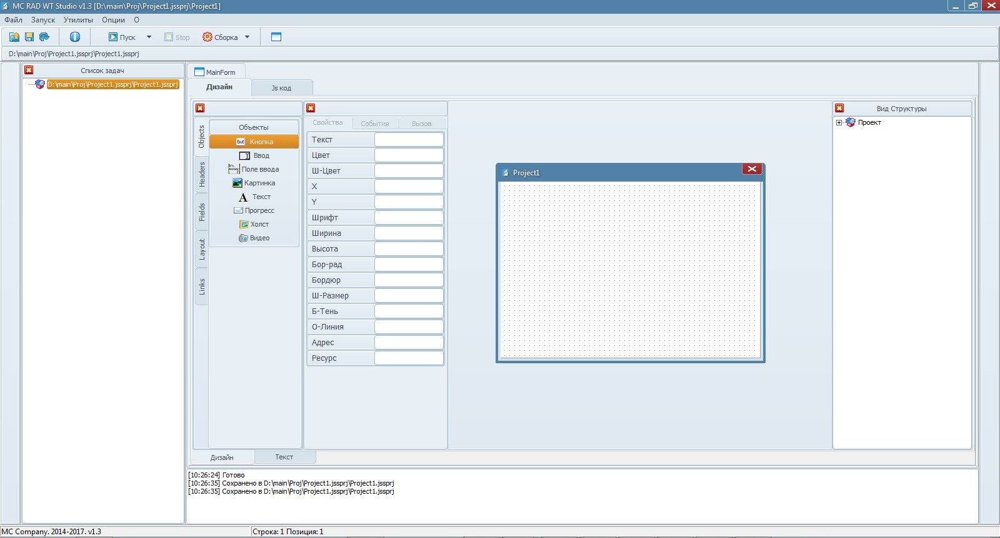

MC Studio - первое приложение
Знакомство
Сейчас вы видите главное окно IDE

Давайте приступим к созданию вашего первого приложения. Выберите в окне с компонентами кнопку.

Выберите для нее место на форме. Просто наведите на форму и нажмите тогда, когда захотите ее расположить.

В инспекторе объектов (окно левее пользователького) вы можете изменить заголовок кнопки.

Отлично! Перейдем к следующему шагу.